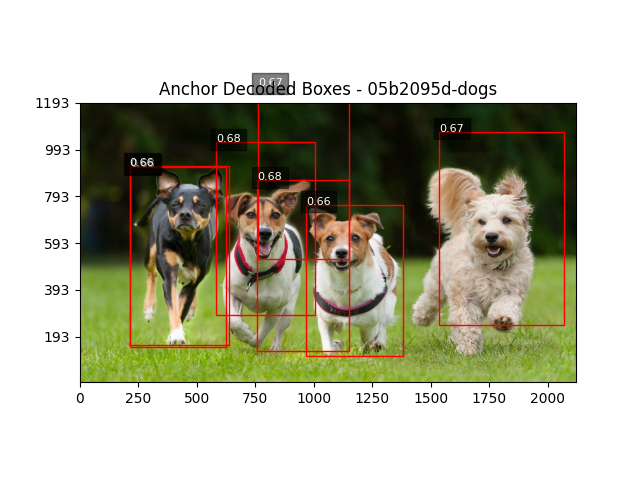

Region Proposal Network (RPN) Implementation
This website showcases an implementation of a Region Proposal Network (RPN) pipeline including tensor generation, decoding, anchor encoding, and non-maximum suppression.
Ground Truth Tensor Generation

Generates patch-level ground truth tensors from annotated images to simulate the output of a simple RPN.
Tensor Decoding
Converts existence and location tensors back into bounding box proposals for visualization and evaluation.
Anchor-Based Encoding

Implements anchor-based encoding by labeling each patch location and anchor shape based on ground truth matches.
Anchor-Based Decoding

Decodes anchor-based tensors back into bounding box proposals using predicted offsets and anchor configurations.
About Region Proposal Networks
Region Proposal Networks (RPNs) are a key component in object detection systems like Faster R-CNN. They generate region proposals where objects might be located in an image, which are then refined and classified by subsequent network components.
This implementation walks through the core components of an RPN using bounding boxes and COCO-style annotations, including tensor generation, decoding, anchor encoding, and non-maximum suppression.